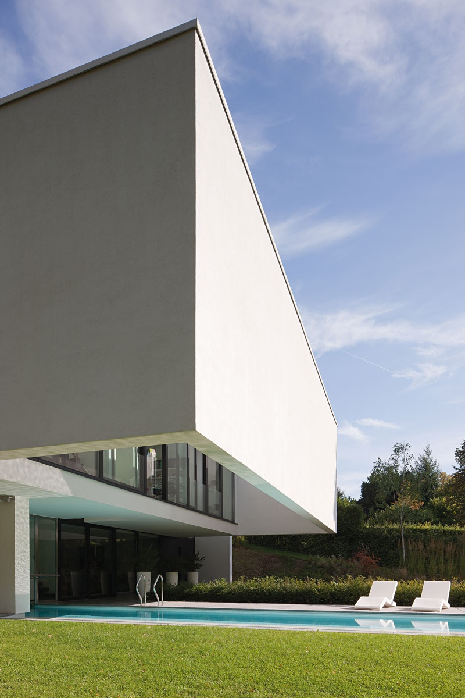
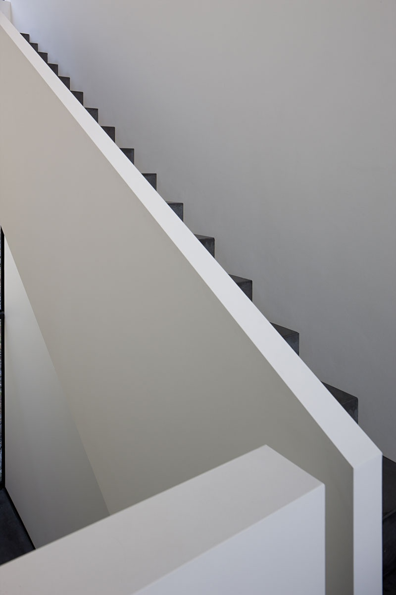

01 / 09
Le porte-à-faux
Le volume supérieur en surplomb au-dessus du bassin : la signature de l'écriture Erpicum.
Une œuvre signée Bruno Erpicum (2007). 622 m² habitables, posés sur 1.900 m² de jardin paysager, dans le quartier Prince d'Orange à Uccle.
— Bruno Erpicum, à propos de Percke (2007)

Le prisme supérieur protège les espaces privés et sert de terrasse. En-dessous, la transparence : baies coulissantes pleine hauteur, le séjour ouvert sur le jardin.
Bruno Erpicum, Percke 1, 2007. Un manifeste construit.
Au lieu-dit Percke, Bruno Erpicum dessine en 2007 deux anneaux qui s'entrelacent. Le premier, posé au sol, déploie les espaces de vie. Le second, suspendu, protège les volumes intimes et offre une terrasse au plein ciel.
La maison se lit comme une partition : trois niveaux desservis par ascenseur, 622 m² habitables, ouverts en grand sur 1.900 m² de jardin paysager. La piscine, extérieure et intérieure, traverse l'œuvre de part en part.
« L'anneau : lien ou cercle. Ici, les liens s'entrelacent. L'un protège les espaces privés et sert de terrasse. L'autre couvre la maison comme un toit. » — Bruno Erpicum, à propos de Percke


Îlot monolithique en pierre cendrée, batterie d'électroménager Miele intégré dans la paroi. Le plan de travail s'étire sur toute la longueur de la pièce, sans rupture.
Faites défiler — la villa se déploie horizontalement.
Le volume supérieur en surplomb au-dessus du bassin : la signature de l'écriture Erpicum.
Plan de travail monolithique en pierre cendrée, quinze mètres sans rupture, batterie Miele encastrée.

Pièce traversante, foyer ouvert, parquet patiné. La pièce de vie centrale, sous l'anneau.

Eau bleu turquoise, plafond angulaire en porte-à-faux, vis-à-vis sur le jardin par une longue baie.
Marches en béton ciré, garde-corps lame blanche. La verticalité comme respiration.

Vide central sur le séjour, baies pleine hauteur, lecture traversante des trois niveaux.

Bassin allongé sous le porte-à-faux, dalles cendrées, écran végétal continu.

Sous le volume supérieur, dalles cendrées, baies coulissantes pleine hauteur. Une pièce extérieure, toute l'année.

Mosaïque cendrée, hammam vitré, ouverture directe sur la piscine intérieure.

Pierre, chêne brossé, métal patiné : les matières sont peu nombreuses, choisies pour vieillir avec grâce.
Cliquez sur une image pour l'ouvrir en plein écran.
Le quartier le plus rare de Bruxelles. 1.900 m² de terrain paysager, à dix minutes du centre, aux portes du bois de la Cambre.
Le quartier Prince d'Orange est l'un des plus rares de Bruxelles : rues bordées d'arbres centenaires, propriétés discrètes, frontière nord du Bois de la Cambre. La Maison Erpicum y prend place sur un terrain paysager de 1.900 m², à quelques minutes du centre.
Sur rendez-vous uniquement. Notre équipe vous accompagne pour une découverte confidentielle de la villa.